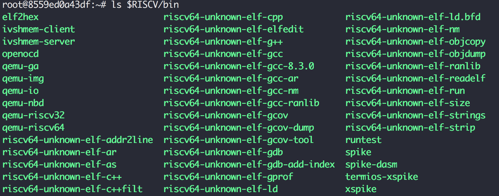

[RISC-V Architecture Training] @DEMO: Bare-metal assembly & SPIKE simulator
General software stack

Embedded system software stack
What is newlib?
https://en.wikipedia.org/wiki/Newlib
- C standard library implementation for embedded system
- GCC port for non-Linux embedded system
- When lacking of full-blown OS, how to make a system call and how to use devices
Newlib code size will signaficant larger than Linux code size, because it includes the system calls that is already embedded inside Linux.
What is cross-compile?
Cross-compiler
- A compiler capable of creating executable code for a platform other than the one on which the compiler is running
- In our case: RISC-V compiler running on top of x86
Setup GNU toolchain for RISC-V
2 options
- Build from scratch
- Download pre-built version from SiFive (or other vendors)
Here we choose option 1, because it’s more useful in the future. You probably need to choose your own instruction subsets.
1. Download source
- Community version GNU toolchain on Github: https://github.com/riscv/riscv-gnu-toolchain
- riscv-gcc
- riscv-gdb
- riscv-glibc
- riscv-binutil
- riscv-newlib
- riscv-dejagnu
git clone https://github.com/riscv/riscv-gnu-toolchain --recursive
2. Install prerequisites
Ubuntu 16.04
sudo apt-get install -y autoconf automake autotools-dev curl libmpc-dev libmpfr-dev libgmp-dev gawk build-essential bison flex texinfo gperf libtool patchutils bc zlib1g-dev libexpat-dev
sudo apt-get install -y build-essential zlib1g-dev pkg-config libglib2.0-dev binutils-dev libboost-all-dev autoconf libtool libssl-dev libpixman-1-dev libpython-dev python-pip python-capstone virtualenv expect
sudo apt-get install -y autoconf automake autotools-dev curl libmpc-dev libmpfr-dev libgmp-dev libusb-1.0-0-dev gawk build-essential bison flex texinfo gperf libtool patchutils bc zlib1g-dev device-tree-compiler pkg-config libexpat-dev
3. Compile & install
git clone --recursive https://github.com/riscv/riscv-gnu-toolchain
# this will take a long time to download
cd riscv-gnu-toolchain; mkdir build; cd build
../configure --prefix=/opt/riscv --with-arch=rv64gc --with-abi=ilp64d
# --with-arch=rv64gc defines target architecture is rv64gc (64-bit IMACFD extentions support)
# option example: rv64imac (64-bit IMAC extenstions support)
# --with-abi=ilp64d defines target ABI (applicaiton binary interface)
# "d" means hard-float
# option example: ilp64 (64-bit soft float)
make newlib -j4 # compile & install
make report-newlib # run DejaGnu test suite (super slow)
Toolchain directory content

Assembly / programmer’s handbook
Please refer to handouts: RISC-V Reference Card
| Register | ABI Name | Saver | Description |
|---|---|---|---|
| x0 | zero | Hard-wired zero | |
| x1 | ra | Caller | Return address |
| x2 | sp | Callee | Stack pointer |
| x3 | gp | Global pointer | |
| x4 | tp | Thread pointer | |
| x5-7 & x28-31 | t0-6 | Caller | Temporaries |
| x8-9 & x18-27 | s0-11 | Callee | Saved registers |
| x10-17 | a0-7 | Caller | Function arguments / return value |
Separation of saved registers and temporary registers makes it possible to reduce 32 registers to 16 registers in E extension
Assembly / what is ABI?
ABI (application binary interface) includes:
- Instruction set
- Calling convention
- Function’s argument passing and return value retrieving
- Stack vs. registers
- If stack, which parameter is pushed first?
- If register, which registers are used for what?
- Function’s argument passing and return value retrieving
- How to make system calls to operating system
- More details in our next DEMO
Assembly / ra return address
ecall:ra <= PC + 4ret: jump back tora(PC <= ra)
Assembly / sp stack pointer
When goes into function call, save registers to stack
00000000000114da <_realloc_r>:
* 114da: 715d addi sp,sp,-80 # reserve 80-byte space on stack
114dc: f84a sd s2,48(sp) # push s2
114de: e486 sd ra,72(sp) # push ra
114e0: e0a2 sd s0,64(sp) # push s0
114e2: fc26 sd s1,56(sp) # push s1
114e4: f44e sd s3,40(sp) # push s3
... # push s4 ~ s7
114ee: e062 sd s8,0(sp) # push s8
... # function
115e0: 60a6 ld ra,72(sp) # pop ra
115e2: 6406 ld s0,64(sp) # pop s0
115e4: 854a mv a0,s2
115e6: 74e2 ld s1,56(sp) # pop s1
... # pop s2 ~ s7
115f4: 6c02 ld s8,0(sp) # pop s8
* 115f6: 6161 addi sp,sp,80 # release 80-byte space on stack
115f8: 8082 ret # return
Assembly / gp global pointer
gp = global pointer = pointer to global variables
- GP is pointing at the center of
.datasection that allows program to index to any global variables easily without the need toauipcevery time
Example: C program uses global variables
/* Global Variables: */
Boolean Bool_Glob;
char Ch_1_Glob,
Ch_2_Glob;
Proc_4 () /* without parameters */ {
Boolean Bool_Loc;
Bool_Loc = Ch_1_Glob == 'A';
Bool_Glob = Bool_Loc | Bool_Glob;
Ch_2_Glob = 'B';
} /* Proc_4 */
ASM disabled GP
0000000040400826 <Proc_4>:
* 40400826: 3fc00797 auipc a5,0x3fc00
4040082a: f777c783 lbu a5,-137(a5) # 8000079d <Ch_1_Glob>
* 4040082e: 3fc00717 auipc a4,0x3fc00
40400832: f7272703 lw a4,-142(a4) # 800007a0 <Bool_Glob>
40400836: fbf78793 addi a5,a5,-65
4040083a: 0017b793 seqz a5,a5
4040083e: 8fd9 or a5,a5,a4
* 40400840: 3fc00717 auipc a4,0x3fc00
40400844: f6f72023 sw a5,-160(a4) # 800007a0 <Bool_Glob>
* 40400848: 3fc00797 auipc a5,0x3fc00
4040084c: 04200713 li a4,66
40400850: f4e78a23 sb a4,-172(a5) # 8000079c <Ch_2_Glob>
40400854: 8082 ret
00000000400003f0 <Proc_4>:
400003f0: 8651c783 lbu a5,-1947(gp) # 80001fbd <Ch_1_Glob>
400003f4: 8681a703 lw a4,-1944(gp) # 80001fc0 <Bool_Glob>
400003f8: fbf78793 addi a5,a5,-65
400003fc: 0017b793 seqz a5,a5
40000400: 00e7e7b3 or a5,a5,a4
40000404: 86f1a423 sw a5,-1944(gp) # 80001fc0 <Bool_Glob>
40000408: 04200713 li a4,66
4000040c: 86e18223 sb a4,-1948(gp) # 80001fbc <Ch_2_Glob>
40000410: 00008067 ret
Assembly / tp thread pointer
tp (thread pointer) is a pointer to thread-level global variables (aka thread-local storage)
Assembly / code example
@DEMO
- Directory
~/riscv-training/lab/21-lab.compile- Source code
example-asm.sandexample-c.s
- Source code
Function of example-asm.s
- 4x4 Matrix multiplication, and result checking against Excel
- Use 2-level function calls to do the job
- Demostrate calling convention by passing argument and return value via registers
a* - Save registers
s*to stack before using them
- Demostrate calling convention by passing argument and return value via registers
Compare with example-c.c with the same functionality
- Assembly code is much harder to write and debug for normal functionality
- Assembly code’s binary size is smaller (6624 bytes vs. 6000 bytes)
Assembly / what is linker script?
- Describe how the sections in the input files should be mapped into the outpufile
- Control the memory layout of the output file
Entry point
- The first instruction to execute in the problem
Common section
.text: actual machine instructions.data: static data in your code.bss: uninitialized global or static variables, will be initialized to zero during startup.noinit: part of bss but will not be initialized to zero
Assembly / compile assembly
Compile -> link -> objdump
# assemble
${RISCV}/bin/riscv64-unknown-elf-as example-asm.s -o example-asm.o
# link
${RISCV}/bin/riscv64-unknown-elf-ld -T linker-asm.ld example-asm.o -o example-asm.elf
# object dump
${RISCV}/bin/riscv64-unknown-elf-objdump -D example-asm.elf > example-asm.elf.dump
Linker script
SECTIONS
{
. = 0x10000;
.text : { *(.text) }
.data : { *(.data) }
}
ENTRY (_start)
- Both code and data start from
0x0001_0000 _startis the entry point label
Assembly / compile C code
Compile bare-metal C program
# compile
${RISCV}/bin/riscv64-unknown-elf-gcc example-c.c -o example-c.elf
# object dump
${RISCV}/bin/riscv64-unknown-elf-objdump -D example-c.elf > example-c.elf.dump
Assembly / ASM vs. C
Development effort
Myself
- 2 hours in ASM
- 2 mins in C
Size of the code
With printf
riscv@riscv:~/riscv-training/lab/21-lab.compile$ ll *.elf
-rwxr-xr-x 1 1380539737 1876110778 6000 Dec 7 17:07 example-asm.elf*
-rwxr-xr-x 1 1380539737 1876110778 138792 Dec 7 17:18 example-c.elf*
Without printf and turn on -Os: 107.2%
-rwxr-xr-x 1 1380539737 1876110778 6000 Dec 7 17:30 example-asm.elf*
-rwxr-xr-x 1 1380539737 1876110778 6432 Dec 7 17:30 example-c.elf*
SPIKE
- SPIKE: official ISS (instruction set simulator) of RISC-V
- GDB-like TUI (text-based user interface)
- Support single step execution / breakpoint / watchpoint
- XSPIKE: open a separate terminal (in GUI mode) to capture the
printfoutput
How to invoke SPIKE
# run SPIKE in direct mode
> ${RISCV}/bin/spike target.elf
# run SPIKE in interactive debug mode: -d
> ${RISCV}/bin/spike -d target.elf
# run SPIKE with log dumping: -l
> ${RISCV}/bin/spike -l target.elf 2>&1 | less
SPIKE interactive debug mode
: pc 0: show current PC in core 0: reg 0 a0: show content of registera0in core 0: mem 2020: show content of memory at0x2020: until pc 0 80000000: stop when PC hits0x8000_0000
More commands type help under interactive debug mode
Note: don’t forget the “0” for core 0
@DEMO
- Run SPIKE in direct mode
- Run SPIKE in interactive debug mode
- Show register/memory content
- Set breakpoint
- Run SPIKE with log dumping
.footnote[Next session: LAB]